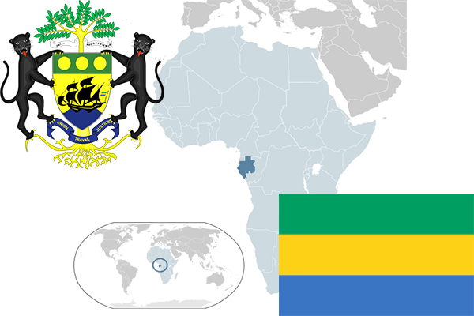

To`liq nomi: Gabon Respublikasi
Region: Markaziy Afrika
Qonunchilik shakli: Respublika
Mustaqillik kuni: 17-avgust 1960 - yil (Fransiyadan)
Poytaxt: Librevil
Maydoni: 267 667 km² (dunyoda 74 -o`rinda )
Chegaradosh davlatlari: Ekvator Gvineyasi, Kamerun
Aholisi: 1 738 541 (dunyoda 154 - o`rinda, 2016 -yil roʻyxat)
Aholi zichligi: 6,67 /km²
Aholining o`rtacha yoshi: 54,05 yil ( 55,2 ayollar, 52,9 erkaklar)
Rasmiy tili: fransuz tili
Dini: 55% xristian, 40% mahalliy dinlar, 1% musulmonlar
Pul birligi: Afrika franki
Telefon prefiksi: +241
Internet domen: .ga
Xalqaro tashkilotlarga a`zoligi: BMT (1960 – yildan)
Dengiz va okeanlarga chiqishi: Atlantika okeani,
YIM: Butun: $ 34,41 mlrd , Jon boshiga: $ 18 600 (2008 - yil roʻyxati)
Yirik shaharlari: Librevil